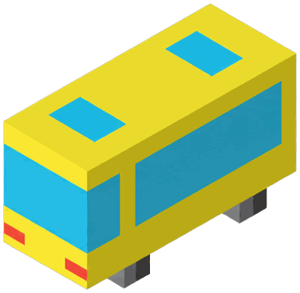
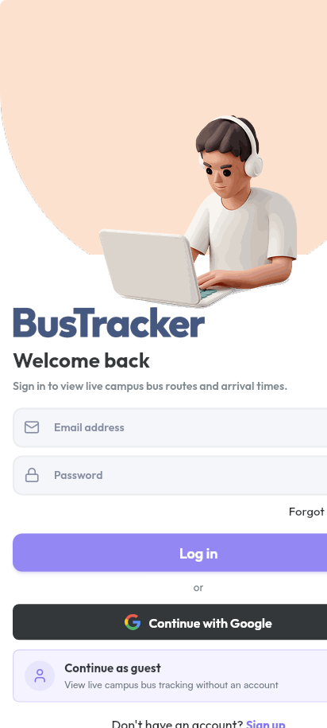

01
See buses on the campus map
Check current bus positions alongside campus stops and route paths. Positions refresh automatically.

BusTrackerMade for NIT Calicut
Find buses on campus, check their routes and stops, and get an arrival estimate before you head out.
For students, staff and campus visitors.
Campus travel, with a clearer view.
BusTracker brings campus buses and route information into one place, so you can plan the walk to your stop with a little more certainty.
A closer look
From the campus map to your next bus, the essentials stay close at hand.
Check current bus positions alongside campus stops and route paths. Positions refresh automatically.
Select a boarding stop, then review bus positions, route progress and arrival information.
See arrival estimates based on a bus’s position, route and stop progress.
Authorized administrators can review fleet and tracker status, manage devices, and inspect telemetry.
Positions and arrival estimates are shown in the app and may change as bus information updates.
Getting started
Open the campus map as a guest or sign in with your NITC account.
Inside BusTracker
The app brings the campus map, route details and arrival estimates together. Open BusTracker to explore the current interface.
Explore the appApp screenshot: sign-in screen. The map above is an illustration, not live bus data.

From stop to destination
Open the app, find your route, and check the information you need before heading out.
Continue as a guest or sign in with an NITC account.
Review route paths and the stops they serve.
Use the bus position and arrival estimate to plan when to leave.
A campus project
BusTracker is a campus bus-tracking application for the National Institute of Technology Calicut. It brings bus locations, campus routes and arrival information into one student-friendly place.
Open BusTrackerReady to head out?